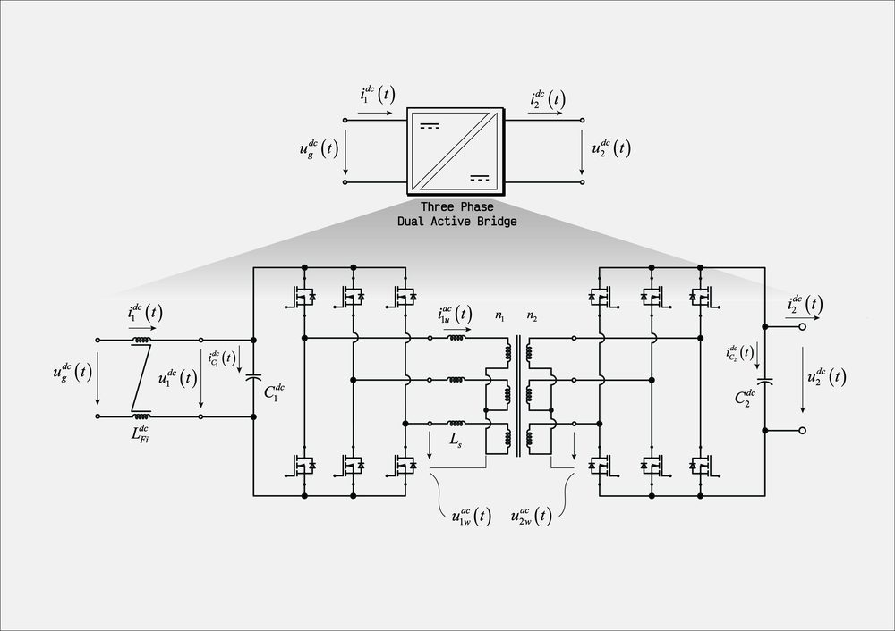
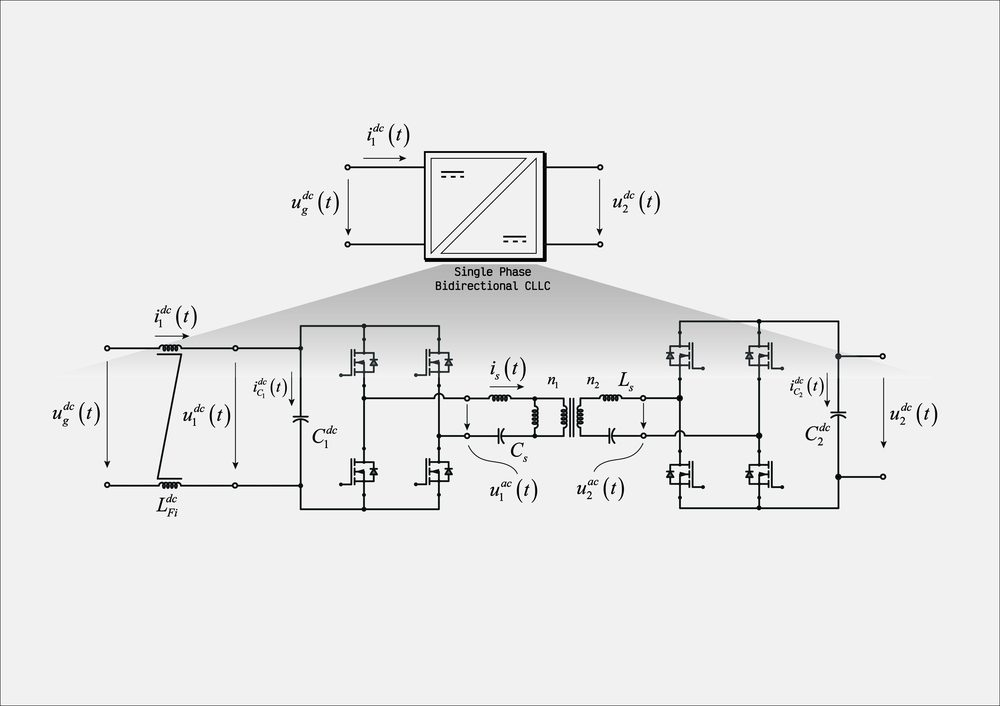
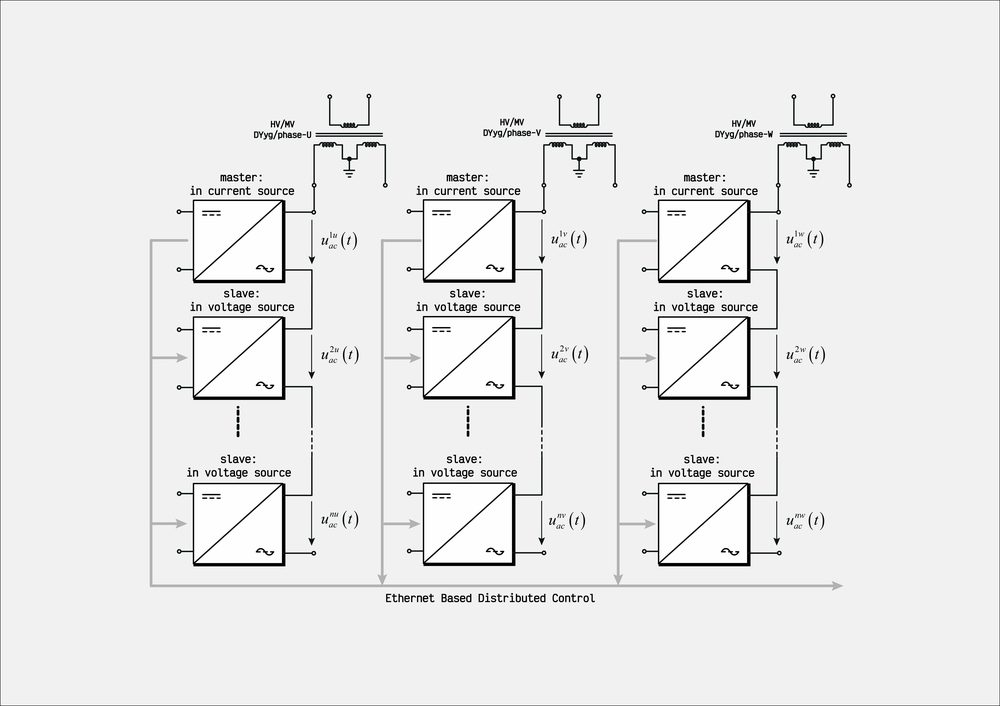
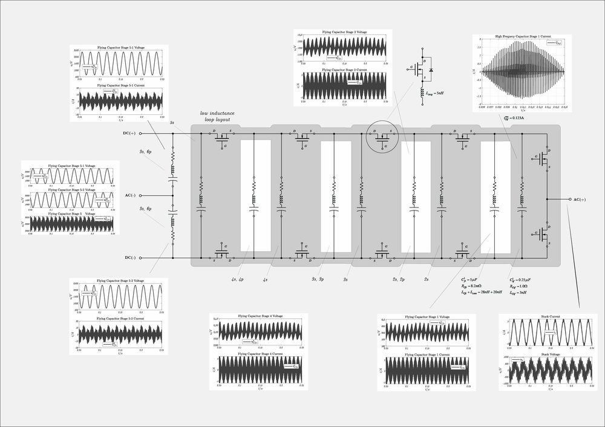
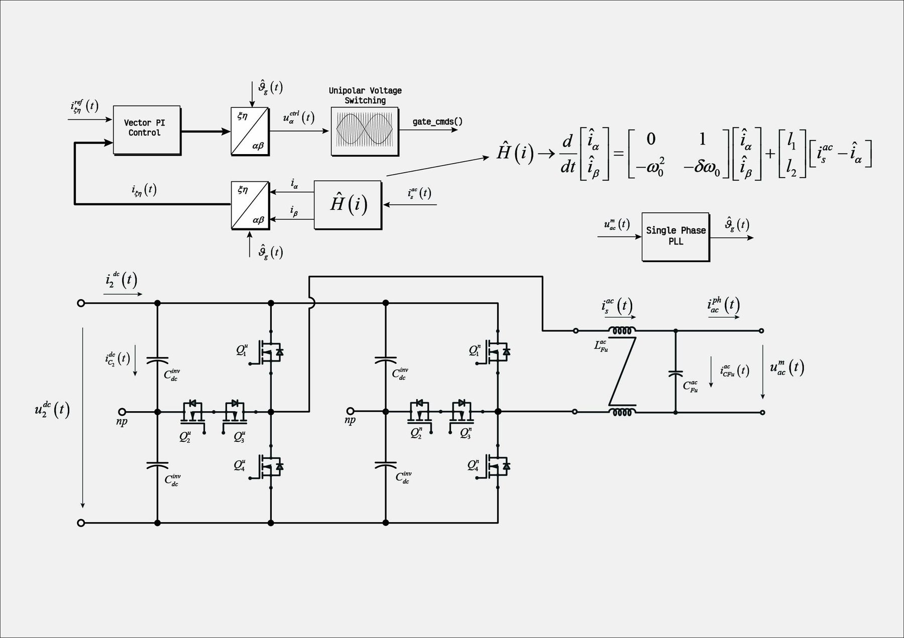
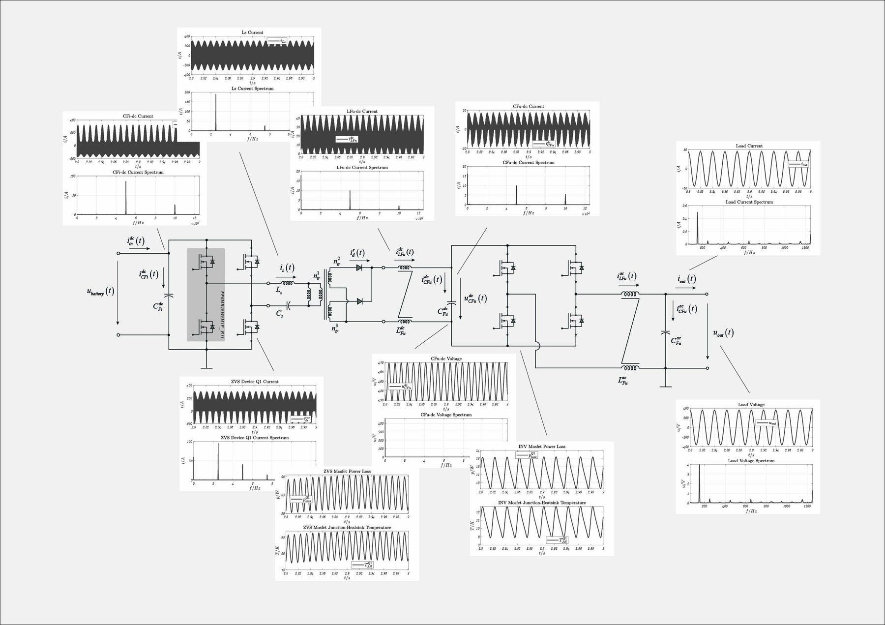
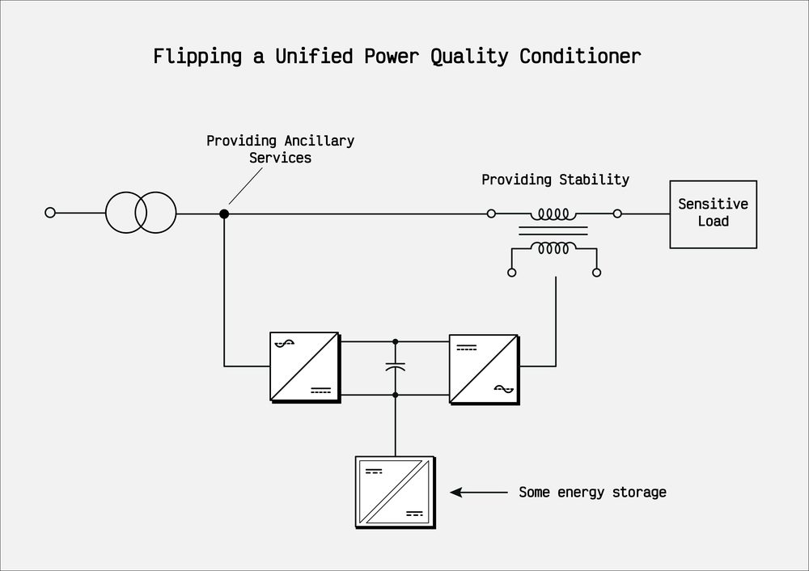
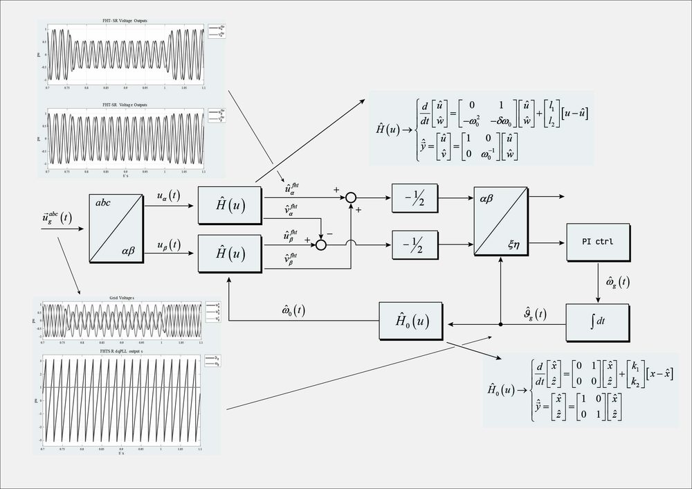

Projects
Projects
Simulation benches, control designs and studies, grouped by area. Each project links to its repository on GitHub and to the technical note that documents it.
Isolated DC/DC converters
Bidirectional isolated stages for the 250 kW class, 690 V AC application: the building blocks of the solid-state transformers and of the storage interfaces.

Single-phase dual active bridge
250 kW isolated DC/DC stage — phase-shift modulation, ZVS analysis per device, loss and spectrum scripts.

Three-phase dual active bridge (DAB3)
750 kW three-phase DAB — AC-side waveforms, spectrum and animated transformer quantities.

Resonant CLLC converter
Bidirectional resonant DC/DC — tank design, both power directions, losses, transformer sizing and a CLLLC tank optimiser.
Inverters and solid-state transformers
Single-phase inverters, multilevel topologies and the modular SST that is built from them.

Solid-state transformers
Modular SST — DAB or CLLC stages feeding T-type inverters, parallel on DC, series on AC, master/slave distributed control.

Flying-capacitor multilevel inverter
Single-phase flying-capacitor half-bridge — pre-charge, phase-shifted modulation and capacitor-voltage balancing.

Single-phase inverter and active front end
T-type single-phase inverter and single-phase AFE — vector PI control in the stationary frame with a harmonic-tracker observer.

Single-phase UPS, 6 kVA
Electrothermal simulation of a 6 kVA UPS power chain — control architecture and component selection.
Power quality and grid interface
Converters that face the grid: what they can offer to the network and how they synchronise to it.

Flipped unified power quality conditioner (F-UPQC)
Left-shunt UPQC — shunt converter for grid services, series converter for load-voltage stability; bench and paper.

Active front end on weak grids and grid-forming control
AFE modules on grids from SCR 20 down to 2 — FRT tests, reactive-current steps, starting point for grid-forming control.

First-harmonic-tracker dq-PLL
Single-phase grid synchronisation with an adaptive-filter observer; comparison of resonant PI, SOGI and DDSRF-PLL structures.
Electrical machines and control
Observers and controllers for machines and for distributed-parameter systems, plus compact adaptive-control projects.

Sensorless PMSM control
Five benches on one plant — SVPWM or MPC current control combined with back-EMF, EKF or nonlinear observers.

Adaptive control and estimation
MRAC on an active suspension and on a textbook plant, harmonic-tracker design, coupled PDE/ODE thermal model.

Control of string-actuated systems
Systems actuated through a string or cable: PDE model coupled to rigid-body dynamics and its control, after Wang and Krstic.
Teaching
Lecture material and textbooks from the Advanced Control Engineering course.